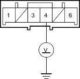
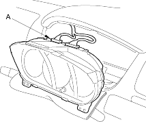
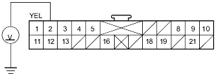

- Turn the ignition switch ON (II).
- Check for voltage between the No. 4 terminal of the C3 connector and body ground. There should be battery voltage.
C3 CONNECTOR

Wire side of female terminals
Is there battery voltage?
YES - Poor contact at C3 and C4 connectors or an open in floor wire harness or in the OPDS unit harness. Check the connection between the C3 and C4 connectors; if the connection is OK, replace the faulty harness. 
NO - Poor contact at C1 connector or an open in dashboard wire harness A. Check C1 connector; if the connection is OK, replace the dashboard wire harness A.
- Turn the ignition switch OFF.
- Disconnect the C2 connector (A) from the gauge assembly.

- Turn the ignition switch ON (II).
- Check for voltage between the No. 2 terminal of C2 connector and body ground. There should be battery voltage.
C2 CONNECTOR

Wire side of female terminals
Is there battery voltage?
YES - Faulty side airbag indicator light circuit; replace the gauge assembly.
NO - Open in dashboard wire harness A; replace dashboard wire harness A.